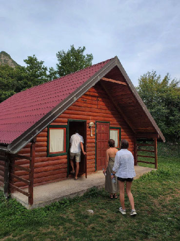

Река Тара берет свое начало в горах северной Черногории и протекает через национальный парк Дурмитор. Парк, образующий каньон глубиной до 1300 метров. Этот каньон внесен в список Всемирного наследия ЮНЕСКО, а сама река считается одной из самых чистых в Европе.
Протяженность реки Тара составляет около 140 километров, из них 82 километра протекают по территории Черногории. Общий перепад высот достигает 1300 метров, что создает идеальные условия для прохождения порогов различной глубины.
Забронировать тур можно на сайте:
ŽabljakЗабронировать двухдневный отпуск можно кликнув по картинке:
